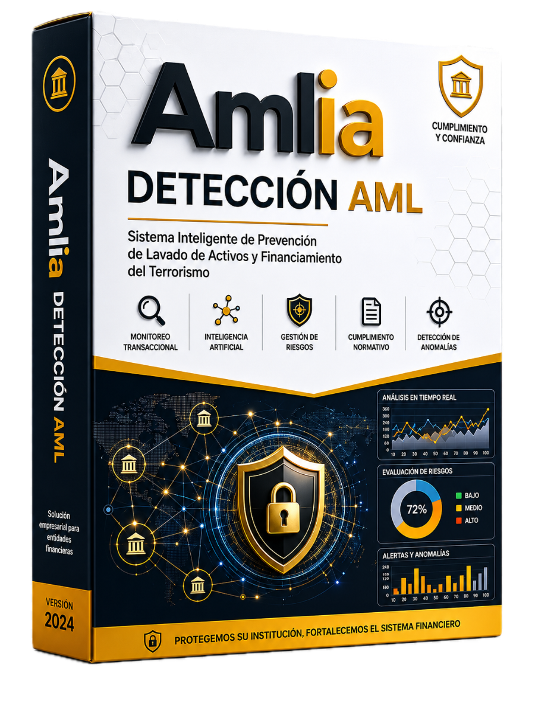

Capacitaciones in-company
Fundamentos de AML con IA, modelado de riesgo, MLOps y uso de LLMs para investigación, a la medida de tu equipo.

Grafos, modelos explicables y MLOps que se integran a tus equipos de datos y cumplimiento. Menos falsos positivos, alertas priorizadas y cumplimiento GAFI/FATF.
Soluciones integrales que se adaptan a tu institución y a tu regulador — diseñadas para integrarse con tus equipos de ciencia de datos y cumplimiento.
Fundamentos de AML con IA, modelado de riesgo, MLOps y uso de LLMs para investigación, a la medida de tu equipo.
Diagnóstico de procesos, diseño de estrategia híbrida reglas + ML + grafos y soporte experto en auditorías.
Detección de anomalías, scoring de riesgo, grafos relacionales (GNN / Neo4j) y despliegue en producción.
Trazabilidad, auditoría, versionado de datos y modelos para pasar auditorías sin fricción.
Tipologías de lavado que detectamos con alta precisión, combinando reglas, aprendizaje automático y análisis de grafos.
Detección de depósitos fraccionados que convergen temporalmente para evadir umbrales de reporte.
Cadenas complejas entre cuentas puente y jurisdicciones de riesgo que dispersan y reagrupan fondos.
Sobre/subfacturación y patrones atípicos en pagos internacionales y operaciones de comercio.
Actividad anómala en cuentas nuevas con alta intermediación y rotación rápida de fondos.
Rampas fiat-cripto no habituales, con KYC reforzado y trazabilidad de origen y destino.
Relaciones ocultas y accesos anómalos correlacionados entre personas y operaciones internas.
Cinco etapas para llevar tu proyecto de IA a producción, con foco en explicabilidad y cumplimiento en cada paso.
Objetivos, datos y KPIs
Arquitectura y features
Validación con datos reales
Integración core / alertas
Monitoreo y auditoría
Cada propuesta se adapta a tu institución y a tu regulador. Estos valores son una referencia inicial.
Cuéntanos tu situación y armamos una demo con tus propios datos.